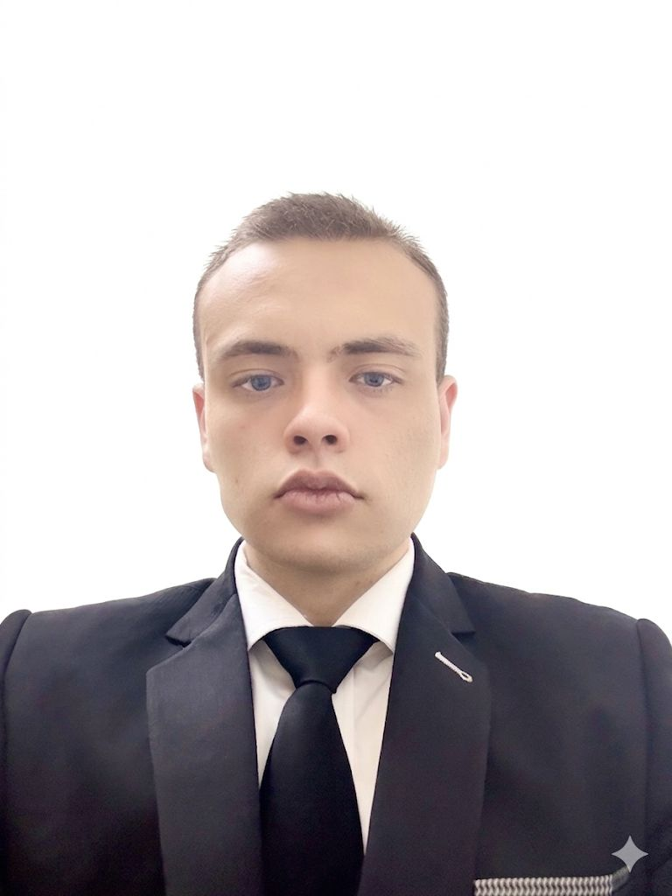
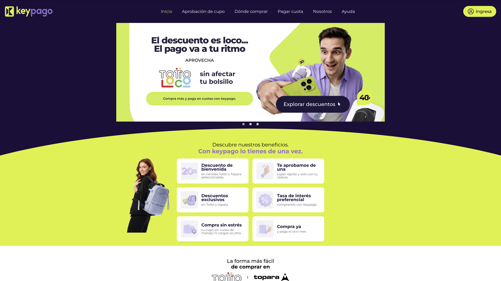
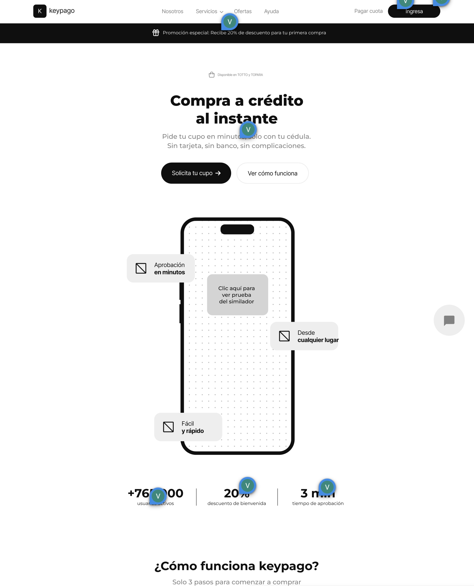
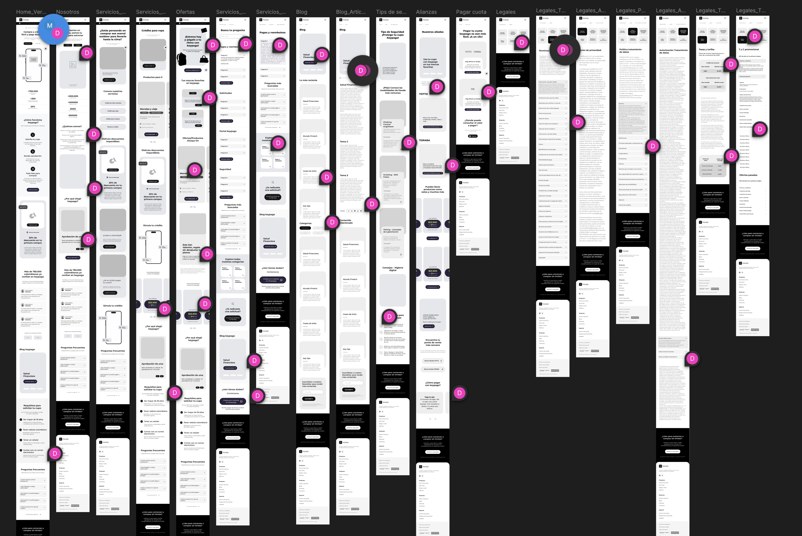
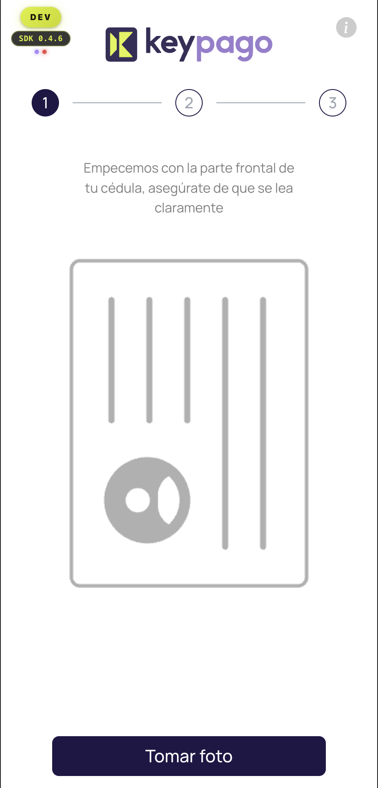
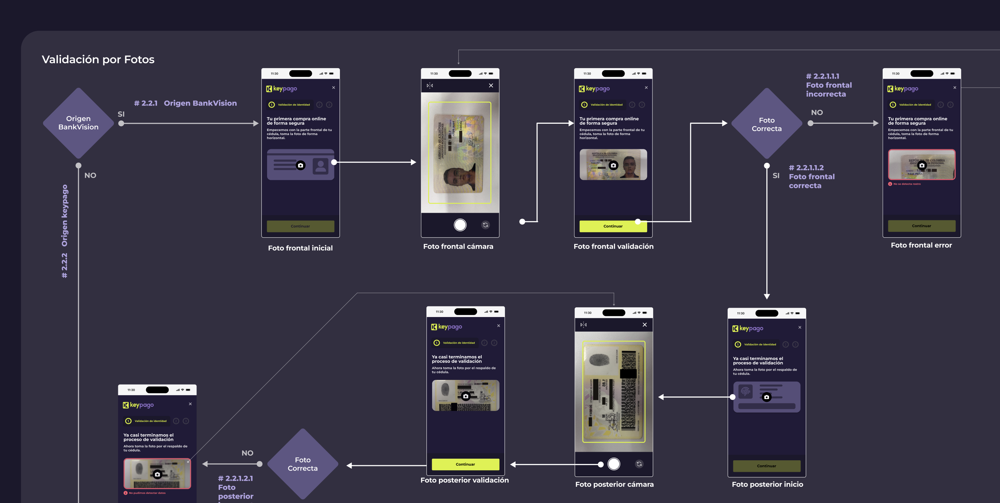
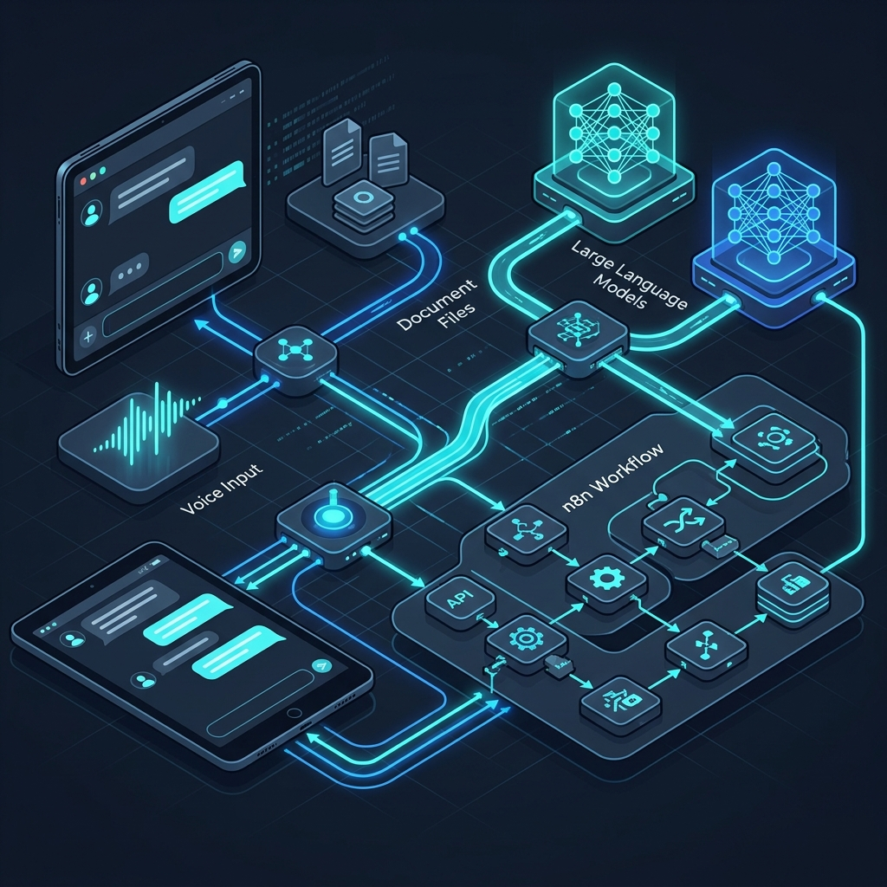

¿Por qué el núcleo corporativo de TOTTO integró a un Senior sin título universitario convencional?
En una industria sujeta a estándares tradicionales donde la titulación es el principal filtro, mi incorporación se fundamentó en mi capacidad analítica para resolver retos técnicos y de negocio altamente complejos que escapaban a la vista de otros. He construido mi trayectoria guiado por un principio fundacional: la ejecución pragmática y cuantificable aporta un valor corporativo exponencial frente a la conceptualización teórica.
Experiencia Profesional Exclusiva
TOTTO | Senior Frontend Developer & UX/UI Designer
Bogotá, Colombia | 1 año - Presente
Asumí la responsabilidad de liderar la transformación digital de una marca icónica, rediseñando su infraestructura técnica y su ecosistema visual.
- • Arquitectura y Refactorización: Orquesté la transición hacia un ecosistema de componentes de alta cohesión y bajo acoplamiento. Depuré deuda técnica, dominando metodologías ágiles.
-
•
- •
Líder Arquitecto UX/UI: Rediseño Landing Keypago & Design SystemDirigí la reestructuración estratégica de la vertical Fintech (Keypago). Lideré el rediseño crítico de la Landing Page principal, transformando una interfaz genérica y convencional en una experiencia 'Premium' minimalista, de alta conversión e hiper-enfocada en el producto.
Paralelamente, defino la gobernanza absoluta del Design System institucional. Ejerzo una auditoría técnica implacable sobre agencias externas para evitar orfandades, forzándoles a aplicar rigor y asegurar que cada Wireframe se alinee meticulosamente con nuestras prácticas de desarrollo.
Evidencia: Evolución UI/UX y Control de Calidad
ANTES (Deprecated)
NUEVA ARQUITECTURA
AUDITORÍA ESTRICTA VS AGENCIA EXTERNA
- •
Ingeniería UX/UI y Arquitectura de Flujos: PaymentProvider (Validación de Identidad)Extrapolé el estándar Premium adquirido hacia la pasarela transaccional (Payment Provider). Orquesté la transición completa de los flujos KYC (Know Your Customer) heredados, rediseñándolos desde cero mediante diagramas de flujo lógicos y una nueva arquitectura estructurada para validaciones biométricas y documentales sin fricciones, seguras y escalables.
Evidencia: Rediseño Transaccional KYC
ANTES (Interface Legacy)
NUEVA EXPERIENCIAARQUITECTURA DE FLUJOS INTERACTIVOS
Brilliant Digital Network (Health-Tech) | Senior Frontend Developer
4 años (Consolidando +5 años de experiencia global core)
Comandé despliegues de alto impacto asumiendo retos técnicos profundos. Garanticé métricas 'Top Tier' en rendimiento dentro de ecosistemas clínicos altamente complejos, impulsando innovaciones sin precedentes en visualización espacial y comunicaciones en tiempo real.
- • Computación Espacial y Rendering 3D: Dirigí la manipulación compleja y orquestación de matrices SVG a gran escala para renderizar mapas tridimensionales interactivos. Integré Amazon Sumerian Hosts para incrustar asistentes virtuales de voz renderizados en entornos 3D.
- • Ecosistema RTC y Procesamiento de Video: Arquitecté y desarrollé un sistema nativo de videollamadas. Desarrollé filtros dinámicos y procesamiento de streaming aplicando infraestructuras avanzadas con diversas tecnologías de AWS.
Destacado: Desarrollo de Soluciones con Inteligencia Artificial
Ingeniería Core y Sustitución de Arquitecturas Dependientes (OpenClaw)
Desplegado de Cero a Producción en: 4 HORAS EXÁCTASEn un excepcional sprint técnico de tan solo 4 horas reloj, me encargué de liderar la ingeniería y cristalizar la ejecución completa de un ecosistema conversacional cognitivo para suprimir dependencias y sobrecostos de plataformas como OpenClaw. La solución se sustenta en una interfaz web avanzada con capacidades multimodales diseñadas, orquestadas e interconectadas en tiempo récord.
- Interacciones por Voz y Mensajería: Soporte asíncrono para streaming nativo conversacional.
- Vectorización RAG Documental: Lectura y curación múltiple de archivos con procesamiento instantáneo.
- Orquestación via n8n y LLMs Nativos: Conexión sinérgica a workflows de n8n integrando LLMs propios para potenciar ejecuciones lógicas personalizadas de alto nivel.

Educación y Validaciones
-
Autodidacta Profesional y Seniority Técnico
Dominio integral en formaciones de Frontend, Backend, Arquitectura Limpia y Diseño UX/UI.
Ver +135 Certificaciones en Platzi» Validado con +135 certificaciones técnicas y especializadas.
-
Especialista en Inteligencia Artificial
Capacitación intensiva en el desarrollo e inserción de LLMs estructurados en optimización de flujos de valor tanto para el stack de desarrollo como de product design.
Ver Certificado Oficial IA» Validación Oficial (ID: pmtpyc7tzfv6)
Core Tech Stack
- Frontend & UI Engineering: React, Vue, Vanilla JS, Electron, Next.js, TailwindCSS, CSS3, HTML5, XML, manipulación de SVG para animaciones y mapas tri-dimensionales.
- Backend / Cloud: Node.js, Express, AWS S3, ApiGateway.
- Product Design: Figma (Advanced Design Systems), UX Architecture, UI Fidelity, User Research.
- Infra / Metodologías: SCRUM, Arquitectura Modular Orientada a Eventos.
- •